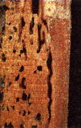
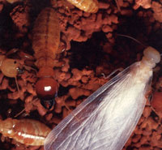
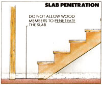
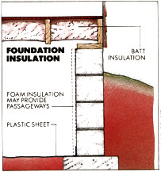

With the leading termiticides now off the market, containing wood borers is difficult-but not impossible.
By helping clear the forests of dead trees, termites play an essential role in nature. Their slow but certain work creates pathways for fungi and bacteria to further decompose fallen timber, thereby preventing the forests from becoming clogged with deadfalls, clearing routes for new growth and enriching the soil.
But termites can't distinguish between a dead tree and a floor joist. The best estimates of structural damage caused by termites put the cost somewhere in excess of $750 million a year in the U.S. alone. No state except Alaska is entirely free from the pests, and though areas with colder climates have fewer problems than do warmer parts of the country, the proliferation of subdivision building in forested areas has encouraged pockets of termite activity in even the least susceptible locales.
It's not unusual for a termite infestation to cost a homeowner several thousand dollars. According to entomologists and termite specialists at the U.S. Department of Agriculture (USDA) Southern Forest Experiment Station in Gulfport, Mississippi, about 95% of this damage is caused by subterranean termites; the remainder is attributed to the dry-wood termite, found principally in the South.
Since World War II, the most popular approach to termite control has been to spray the ground around and under infested struct ures with chlorinated hydrocarbons-a group of potent, long-lasting chemicals that includes chlordane, aldrin, dieldrin and heptachlor. These compounds are sprayed directly onto (or into) the soil around a building's foundation, as well as in the crawlspace or the basement.
The sole manufacturer of chlorinated hydrocarbon termiticides has long insisted that its products are safe and effective when properly used. Effective, yes, but persistent health and environmental problems, such as poisoned fishing ponds, contaminated well water and indoor air pollution in some treated homes, prompted New York, Massachusetts, Rhode Island, Michigan and Minnesota to ban the products, and finally led the Environmental Protection agency (EPA) to consider the delisting of chlordane and its kin. Under such pressure, the manufacturer finally acquiesced and "voluntarily" ceased manufacture, effective August 11, 1987, of all chlorinated hydrocarbon termiticides. While these products are still available in some areas, their use is ill-advised.
The necessary demise of chlordane and its relatives has caused quite a stir in the world of termite control, prompting an accelerated search for safer methods of extermination and suddenly making knowledge of how termites live mandatory for homeowners who wish to take preventive as well as corrective measures.
Termite Ecology
Termites are social insects that live in underground colonies typically numbering just under a quarter-million individuals. A king and queen see to the colony's reproductive needs, while soldiers guard the group against attack from predatory insects (ants are the primary threat) and workers venture out to forage for wood, bringing it back to feed the stay-at-homes. The most commonly seen termites are "swarmers," young insects that leave their colony in huge numbers to search for mates and new homes. Swarmers fly neither well nor far-in large part because their wings fall off easily. Consequently, the first sign of a termite infestation often can be a pile of discarded wings lying on a windowsill.
Termites need warmth and moisture, so when workers leave their colony to forage, they frequently build highways of earthen shelter tubes-rather like subway tunnels-to protect their delicate bodies from dehydration. These tubes typically extend vertically from the soil to the wooden portions of a structure-for example, up the inside of a crawlspace wall-and are the primary evidence to look for during a termite inspection of your home.
If you find termite tubes, destroy them on the spot and make periodic reinspections. If they don't return, you're probably safe, at least for the time; however, if new tubes appear, you've got a termite problem.
Prevention
By far the best way to control termites is to make your home unattractive or inaccessible to them. According to the USDA, many infestations can be traced to unenlightened building and maintenance practices. Subterranean termites need food, warmth and moisture in order to survive and thrive. If you can cut off their access to any of these three necessities, they'll either die or leave in search of greener pastures. Termites also need some way to get from the soil where they live up to the wood in the house where you live. If it's difficult and uncomfortable for them to reach the edible portions of your home, they'll keep to the woods where they belong.
If you're building a new home, make sure the foundation area is cleared of all wood scraps large enough to be gathered by a garden rake. Boards used as forms for poured concrete should always be removed when their job is done. Wooden posts set in cement are safe, so long as the posts don't penetrate through the concrete down into the soil. Foundation footings need to be high enough to prevent contact between the soil and the wood of the floor, but don't bother with constructing a "termite shield"-a strip of aluminum jutting out over the foundation where it meets the siding. Studies have shown that such shields are valuable only in that they force termites to tube over them, making it easier to spot an invasion during an inspection.
If you have any choice in the matter, avoid slab-on-grade construction. The concrete floor could develop cracks that would allow termites to creep from the soil into your home, and the lack of a crawlspace makes it difficult to detect an invasion in its early stages. Signs of termites in structures with slab foundations may be subtle-perhaps nothing more than slightly raised, crumbly areas on plasterboard walls, revealing that termites have consumed the paper between the gypsum and the paint.
Finally, the soil at construction sites in termite-threat areas can be treated with a lowtoxicity termiticide prior to building.
How to discourage termites from entering existing structures? First of all, don't provide them with a stairway to dinner by placing non-termite-resistant wood in direct contact with the soil and your home. Particularly attractive entryways include wooden steps, decks, trellises, planter boxes and firewood stacked against the side of the house. Stack your firewood someplace else, and for porches, steps and similar wooden structures, either use treated lumber-remembering to paint any sawn surfaces with an antitermite coating-or build with woods that are naturally resistant to termites.
The heartwoods of Arizona and bald cypress, eastern red cedar, black locust, redwood, osage orange, black walnut, northern catalpa and Pacific yew all contain natural compounds that are either toxic or repulsive to termites. (Sapwood, the lightercolored material surrounding the heartwood, is much less termite- and decay-resistant.)
Unfortunately, most of these species are rare or quickly getting there, and so are quite expensive. Lumber from some, in fact, can be difficult to find at any price. And, though using treated or naturally resistant woods is the foundation of termite prevention, this approach isn't foolproof; sometimes, the persistent insects will construct protective earthen tube bridges in order to cross these barriers and reach friendlier foods.
Concrete porches and steps whose open undersides are allowed to fill with dirt and debris can be termite havens, since they may conceal from view wooden parts of the house that come in contact with the soil while offering a friendly environment for infestation. Keep these areas cleared of dirt, wood and paper, and provide for good ventilation to prevent moisture from accumulating.
Likewise, be sure the crawlspace under your house is well ventilated. Don't store old lumber or newspapers there, and don't allow shrubbery to grow up and block the vents. In particularly moist climates and situations, it helps to keep things dry if you spread heavy plastic sheeting on the soil of your crawlspace, overlapping the edges of separate sheets by several inches. (Caution: To avoid excessive drying of wood members in older homes, cover only 60% to 70% of the subfloor area with plastic.)
If you insulate your crawlspace against heat loss, it's inadvisable to put foam insulation board against the inside foundation or stem walls, since termites could enter between foam and wall, hidden from view. A safer procedure is to install fiberglass insulation between the floor joists.
TERMITICIDE SAFETY
If your home has recently been treated with a chlorinated hydrocarbon termiticide, or if you have other reasons to be concerned that dangerously high levels of this type of chemical may be present, you can have the air in, under and around your dwelling sampled by professionals.
If high levels of chlordane are detected and you wish to neutralize the threat, countermeasures are available similar to those used to lower the levels of radon in homes: venting crawlspaces; "exhaling" crawlspace air (having it pumped out and replaced); sealing cracks in the central heating system, floor and other parts of the structure through which chlordane could enter the living space of your home; and topfilling or replacing contaminated surface soil.
To receive a list of approved air-sampling laboratories, place a toll-free call to the National Pesticide Telecommunications Network at 800/858-7378 and ask for a copy of the EPA's free "Chlordane Consumer Information Fact Sheet."
Counterattack
Good maintenance and building practices will go a long way toward protecting your home from termite infestation. Still, regular inspections are advisable. To perform your own termite check, put on some old clothes and grab a flashlight. Begin by inspecting the outside foundation of your house, looking for shelter tubes. Now be sure the downspouts of your guttering system discharge water well away from the building. (By the same token, avoid excessive watering of plants near the house.)
If your home has a basement or crawlspace, your next chore is to use the flashlight to search under the house for termites or their tubes. While you're down there and dirty, go ahead and repair any leaking faucets or pipes that are keeping the soil comfortably moist for termites.
Suppose your inspection indicates that your home is feeding the local termite hordes. Then what?
No need for panic. Your house isn't about to crash down on top of you. In most termite species, even a well-established colony eats only a fifth of an ounce of wood a day. So, though you certainly don't want to dally, you've got time to collect your thoughts and plan your counterattack-which generally means calling a licensed exterminator with specialized training and equipment.
Some homeowners who are determined to avoid chemical treatment are experimenting with biological control, using parasitic organisms called nematodes. These tiny, worm-like creatures invade termites through natural body openings, then release bacteria that kill their hosts within two or three days. The bad news is that studies by entomologists indicate that, although nematodes do kill termites when both are confined in a quart jar, they have little control potential in an area as large as that surrounding a house. Still, anecdotal evidence of nematode effectiveness persists, and some exterminators even provide the same guarantee with nematodes as they do with chemicals, giving you a second chance if the biological approach doesn't work.
The surest cure, of course, is a pesticide. The newest chemicals, while less effective than the now-defunct chlorinated hydrocarbons, kill termites with much less risk to human health and the environment. But that's not to suggest that you and the exterminator who applies these chemicals shouldn't regard them with a healthy respect.
Torpedo and Dragnet, among the least toxic of the new generation of termiticides, both contain permethrin, a synthetic version of a natural insecticide which has long been a favorite of organic gardeners. Unlike chlordane, which persists in the environment for decades, permethrin-based insecticides biodegrade into simpler compounds in five to seven years. That means they may need to be reapplied if termites return.
In case of an accidental spill, permethrin can be neutralized by exposing drenched soil to sunlight and by washing your body and clothing with soap and water. Still, don't be lulled into applying permethrin thoughtlessly, since it's highly toxic to fish and bees.
Another new chemical is Dursban. Its active ingredient, chlorpyrifos, is an organic phosphate that's more toxic than permethrin and lasts longer. Chlorpyrifos can be neutralized with a solution of household chlorine bleach. It can also be removed by activated charcoal filters should it enter your water supply by accident.
Other EPA-registered (that is, approved) termiticides include isofenphos, Cyperethrin and Pydrin, the latter marketed under the brand name of Gold Crest Tribute.
Over-the-counter versions of some of these compounds are available, but do-ityourself termite spraying is not a good idea. In fact, the EPA is considering banning sales to the general public of any chemical manufactured to kill termites.
Annual termite inspections are the best way to detect an attack before serious damage is caused, and the latest wrinkle in inspections is the termite-sniffing dog. Research at-Ohio State University and observations by USDA entomologists conclude that the sharp-nosed beagles trained by the TADD Services Corporation of Belmont, California, are remarkably proficient at locating termites that can't be found through a visual inspection alone.
The TADD beagles are trained after the fashion of bomb- and drug-sniffing dogs, and alert their handlers to the presence of termites by pawing and scratching at the site.
The cost of a canine termite search is somewhat higher than for a normal inspection-TADD charges an average of $125, as opposed to the fees of human inspectors, which range from free to $100-but carries a much stronger, "no disclaimer, full-disclosure" guarantee. And because they detect only living termites, the dogs aren't fooled by signs of an infestation that has since been eradicated, as human inspectors sometimes are. This helps avoid unnecessary treatments, thus saving money in the long run while limiting exposure to the chemicals used to kill termites.
TADD has trained dog-and-handler teams on call in all parts of the U.S., including Hawaii, where termites are a problem. You can locate a TADD dog in your area by calling 800/345-TADD.
Controls of the Future
Researchers are studying new controls designed to go easy on the ecosystem. One of the best of these is bait blocks tainted with an insecticide. Worker termites take the poisoned food back to the colony, where the whole gang enjoys a tasty last supper.
Additionally, extracts from woods having antitermite properties are being investigated for use as natural poisons, and various termite repellents are being studied. Finally, chemicals that destroy the cellulosedigesting protozoa in a termite's gut hold promise of starving the insects to death. All these methods, however, are in the research stages.
Until a safe, inexpensive, long-lasting and preferably natural termite control is found, we'll have to depend on proper building, good housekeeping, annual inspections and the safest termiticides available-or else learn to build wood-free houses.
Karla Harby is a freelance writer in Hempstead, New York.
|
 Termites play an essential role in nature. The only problem is that they can't be distinguish between a dead tree and a floor joist. |
 Colonies can have a quarter-million members. There is almost a ton of termites per person on earth. |
 |
|
 |
|
|